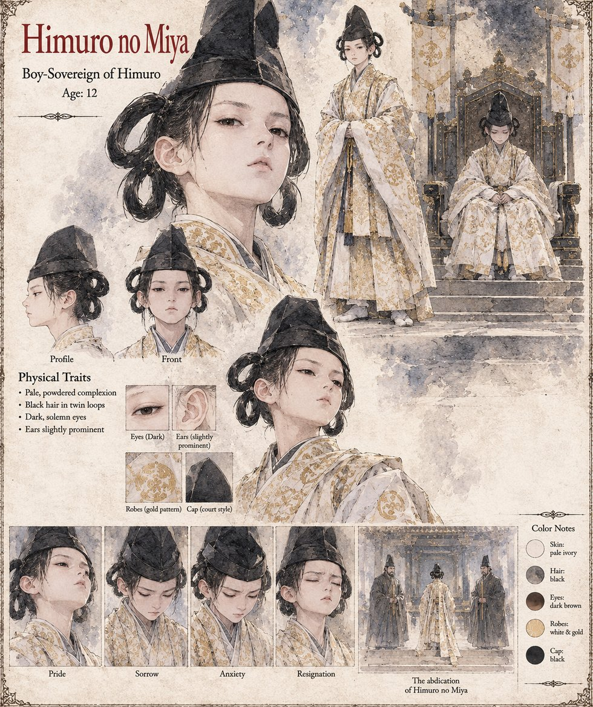

The Boy-Sovereign of Himuro
Sovereign of Himuro · 12 by his sheet · sits the throne between two ministers · abdicates in the Rising of the Northern Gate · the sheet titles him Himuro no Miya
The boy-sovereign of Himuro, who sits the throne between the Minister of the Left and the Minister of the Right and abdicates in the Rising of the Northern Gate. He appears in the manuscript only as an office and an abdication; his name is not given.
The sheet is titled Himuro no Miya, which is the sheet’s own name for him and not the manuscript’s. It draws a boy of 12, small, about 4 ft 10 in, with a pale powdered complexion, a solemn face with a child’s round chin, dark eyes, slightly prominent ears and black hair in twin loops, in a small white-and-gold court robe and a child-sized black cap. Its panels are Pride, Sorrow, Anxiety and Resignation; its scenes show him standing in his robes, sitting very still on a throne too large for him, and seen from behind between two ministers in dark robes, captioned The abdication of Himuro no Miya.
Case 2231 has its own Boy-Sovereign of Himuro, 14 at the opening, who abdicates into a monastery. The site keeps the two as separate pages, since this sheet gives 12 and the 3312 pack does not say they are the same boy.